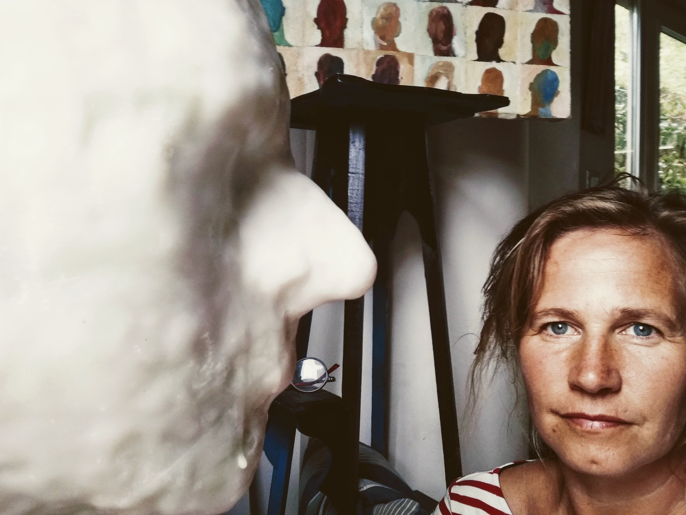

Philosophy

Shapes and shadows that reflect a body mass, subtly hiding the truth of whom we
really are. What we amass, acquire from each other, even from ourselves remains
fuzzy. The veiled truth in each one of us is like a mist of variable densities. The
human being is full of emotions which leads mankind to react in contradictory,
strangely and/or amazing ways.
I seek to express this depth down truth using paper as a medium.
I appreciated working paper for its variety of textures; sometimes rough,
sometimes smooth but also for its solidity as well as for its weakness.
Paper has a significant place in my art work. My experience working paper grants
me the right channel to bring to you a closer image of whom we are. Usually I give
the floor to the paper with engraving, oil paint and with wax sculptures.
Biography
I’m born in 1972 in Bruges - Belgium. When I was 8 my family chose to move
and live in the countryside, still not too far from the city.
In 1989, I entered a boarding school known for its well-established art section.
For 3 years I discovered the multiple pictorial mediums and developed intensively my
drawing skills.
In 1992, I registered myself at the ESA 75 in Brussels and had the unique
opportunity to be teach by Boris Semenoff. Right away, I worked with oil painting
realizing my first faces and my silhouettes which mainly took the shape of larva.
My glued-silhouettes were exhibit in 1994 during a collective exhibition at the
Gallery Viqueray. I chose to pursue the exhibition experiences with the Palmares
Renaissance, the Kunstogenblik, the Pascal Karp Gallery. One of my glued-silhouettes
was single out for the 45° Exhibitions Louis Schmidt in Brussels. Later on, my
silhouettes and set of heads were as well selected at the Mediatine in WSL. And in 2008
at the IPHP, in Poperinge.
In 1995, I got my Bachelor degree of Arts in Painting and Engraving,
(honors: magna cum laude).
In 2000, I was I invited to present my art work at the European Patent Office in
Munich. I exhibited paintings with frail animals illustrating our mankind’ animalistic
trait.
I lived from 2000 to 2003 downtown Chicago. It was then, through the Art
Institute of Chicago, that I’ve met Susan Clinard who is a well-known and recognized
teacher in stone carving. Today still helps me in my actual wax sculpturing.
In 2010 I was invited to exhibit my work at the INTA in Boston.
Back in Belgium since I give drawing and painting classes to adults, as to children.
Those young pupils, through their natural freedom of spirit, gesture are great mentors for
artists such as me.
At the same time, I continuously exhibit my work and use these opportunities to discuss
with different art lovers and some less art lovers the vision, the understanding, the
experience of Art. Day after day I experience those discussions, conversations, debates
as a fruitful source of inspiration. Inspiration that repetitively I use in my expression of
Art, in my interpretation(s) of the shapes and shadows that reflect a body mass, subtly
hiding the truth of whom we really are.
Selections
- 2008 - International Price Hoppeland for Paintings, Poperinge, Belgium
- 2007 - Médiatine, Brussels, Belgium
- 1994 - 45’ Exposition Louis Schmidt, Brussels, Belgium
Exhibitions
- 2018 - Sister Art, Bruges, Belgium
- 2014 - Biennale d'Art de Jodoigne, Belgium
- 2013 - Rodéart, Belgium
- 2013 - 13' Promenade des Artistes Chastre, Belgium
- 2013 - 33' Miniprint International of Cadaques, Spain
- 2012 - Week-end chez l'Artisan d'art, Nivelles, Belgium
- 2012 - Parcours d'Artistes de Jodoigne, Belgium
- 2012 - Exposition d'art par le Patrimoine Stéphanois, Court-st- Etienne, Belgium
- 2012 - Kunst Kleurt Tuinen, Gent, Belgium
- 2010 - "L'art au secours de l'habitat ", Brussels
- 2010 - INTA Art Show, Boston, USA
- 2007 - Pascal Karp Gallery, Brussels, Belgium
- 2000 - Art exhibition, European Patent Office, Munich, Germany
- 1999 - Kunstogenblik,Gent , Belgium
- 1995 - Palmares Renaissance, Herstal, Belgium
- 1995 - Palmares Renaissance, Brussels, Belgium
- 1994 - “Les Amis de Rosall”, Bierges, Belgium
- 1994 - Gallery Viqueray, Brussels, Belgium